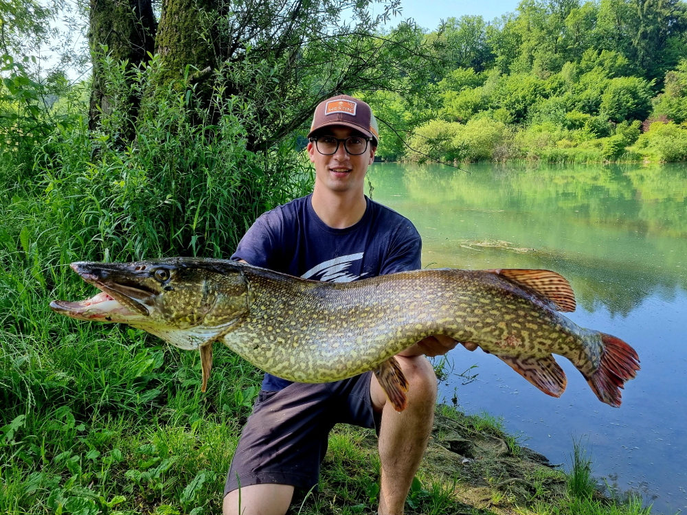

Ribolov je dejavnost, ki navdušuje številne ljudi po vsem svetu. Ta starodavna praksa ne le ponuja priložnost za sprostitev, ampak tudi povezuje ljudi z naravo. V tem članku bomo raziskali različne vidike ribolova in zakaj je to več kot le lov na ribe.
Eden od najbolj privlačnih vidikov ribolova je tišina narave, ki jo doživite ob jezeru ali reki. Stran od mestnega vrveža lahko resnično uživate v miru in tišini, medtem ko čakate, da ugrizne riba. To je priložnost, da se sprostite in pobegnete od vsakodnevnega stresa.
Poleg tega ribolov ponuja priložnost za povezovanje z družino in prijatelji. Skupna izkušnja čakanja na ugriz ribe lahko okrepi vezi med ljudmi. Izmenjava ribiških zgodb in nasvetov ob tabornem ognju je neprecenljiva in ustvarja trajne spomine.
